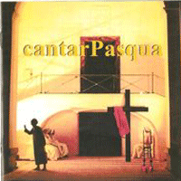

<div class="modal-dialog">
    <div class="modal-content">
        <div class="modal-header">
            <button type="button" class="close" data-dismiss="modal" aria-hidden="true">
                
                <span class="glyphicon glyphicon-remove"></span>
            </button>
            <h3 class="modal-title">I dischi</h3>
        </div>
        <div class="modal-body">
            <h4>Copertine</h4>
            <div class="row">
                <div class="col-lg-4 text-center">
                    
                    <div class="caption text-center"><b>Antidotum (1984)</b></div>
                </div>
                <div class="col-lg-4 text-center">
                    
                    <div class="caption text-center"><b>Musicalia (1984)</b></div>
                </div>
                <div class="col-lg-4 text-center">
                    
                    <div class="caption text-center"><b>magicor&ograve; (1994)</b></div>
                </div>
            </div>
            <div class="row">
                <div class="col-lg-4 col-lg-offset-8 text-left">
                    <ol>
                        <li>Antidotum</li>
                        <li>Serenata</li>
                        <li>Musicalia</li>
                        <li>'O giocatore</li>
                        <li>Mille stoccate</li>
                        <li>'O tiempo che vò chiove</li>
                        <li>Santo Revolio</li>
                        <li>Tarantella figurata</li>
                        <li>Ninna nanna</li>
                        <li>'A festa rint'o vico</li>
                        <li>Sussete, nenna mia</li>
                        <li>M'aggio mangiato 'no melillo doce</li>
                        <li>Canzone del villaniello</li>
                        <li>Sera passaje e tu bella durmive</li>
                        <li>'O cunto d'a morte</li>
                        <li>Frammento</li>
                    </ol>
                </div>
            </div>
            <hr>
            <div class="row">
                <div class="col-lg-4 text-center">
                    
                    <div class="caption text-center"><b>Campania Infelix (1998)</b></div>
                </div>
                <div class="col-lg-4 text-center">
                    
                    <div class="caption text-center"><b>Tinchitera (2001)</b></div>
                </div>
                <div class="col-lg-4 text-center">
                    
                    <div class="caption text-center"><b>Argiento (2002)</b></div>
                </div>
            </div>
            <div class="row">
                <div class="col-lg-4">
                    <ol>
                        <li>M'aggio sussuto all'alba <br>stammatina</li>
                        <li>E la bella che jeva pe mare</li>
                        <li>'O tiempo che v&ograve; chiove</li>
                        <li>Santo Suriesto</li>
                        <li>'O giocatore</li>
                        <li>'Nce stevano dduje compari</li>
                        <li>M'aggio mangiato 'no melillo <br>doce</li>
                        <li>Mo' scenne d''a montagna</li>
                        <li>Sussete, nenna mia</li>
                        <li>Santo Revolio</li>
                        <li>Vi' che dispietto</li>
                        <li>Sera passaje pe'sotto <br>'na cella</li>
                        <li>Lavannara, lavann&agrave;</li>
                    </ol>
                </div>
                <div class="col-lg-4">
                    <ol>
                        <li>Tromba e flauto di corteccia
                            <ol type="a">
                                <li>Pizzitrangole</li>
                            </ol>
                        </li>
                        <li>Ninna nanna
                            <ol type="a">
                                <li>Tinchitera </li>
                                <li>Tutt 'e mieziuorne</li>
                            </ol>
                        </li>
                        <li>La canzone dei Crusci</li>
                        <li>'Ncoppa 'a 'no monte bello</li>
                        <li>Preghiere e rituali
                            <ol type="a">
                                <li>'Sto rosario ca nuje<br> cantamo</li>
                                <li>Sono gi&agrave; ddoje ore <br>sonate</li>
                            </ol>
                        </li>
                        <li>Tira e molla</li>
                        <li>Tammurriata:</li>
                        <li>Nennella ha fatt'e cianci</li>
                        <li>Alla mattina, le ore quattro</li>
                        <li>Tira e molla, molla e tira </li>
                        <li>Hanno asciuto e' monache</li>
                        <li>Tarantella</li>
                        <li>Cuntomarco e Cunticiello</li>
                        <li>Cielo 'e notte</li>
                        <li>Sotto a l'acqua e sotto <br>'o viento</li>
                        <li>Jam surgit hora tertia</li>
                    </ol>
                </div>
                <div class="col-lg-4">
                    <ol>
                        <li>'O giocatore</li>
                        <li>'O tiempo che vo' chiove</li>
                        <li>Serenata</li>
                        <li>Ninna nanna</li>
                        <li>Sussete, nenna mia</li>
                        <li>M'aggio mangiato 'no melillo doce</li>
                        <li>Sera passaje e tu bella durmive</li>
                        <li>'O cunto d'a morte</li>
                        <li>M'aggio sussuto all'alba stammatina</li>
                        <li>Santo Suriesto</li>
                        <li>Sera passaje pe'sotto 'na cella</li>
                        <li>Lavannara, lavann&agrave;</li>
                        <li>Pizzitrangole</li>
                        <li>Cielo 'e notte</li>
                        <li>Sotto a l'acqua e sotto 'o viento</li>
                        <li>Jam surgit hora tertia</li>
                    </ol>
                </div>
            </div>
            <hr>
            <div class="row">
                <div class="col-lg-4 text-center">
                    
                    <div class="caption text-center"><b>Incantamenti (2004)</b></div>
                </div>
                <div class="col-lg-4 text-center"   >
                    
                    <div class="caption text-center"><b>Voci e strumenti dalla Campania Infelix (2005)</b></div>
                </div>
                <div class="col-lg-4 text-center">
                    
                    <div class="caption text-center"><b>Collectio Prima (2006)</b></div>
                </div>
            </div>
            <div class="row">
                <div class="col-lg-4">
                    <ol>
                        <li>Uocchie maluocchie</li>
                        <li>Canto di mietitura</li>
                        <li>La vergine e il mugnaio  </li>
                        <li>La storia del Cavaliere   </li>
                        <li>Il giovane innocente   </li>
                        <li>Testamento   </li>
                        <li>Il matrimonio del pastore  </li>
                        <li>Statte pur certa...  </li>
                        <li>Filastrocca dei "contranomi"   </li>
                        <li>A monaca quanno abballa</li>
                        <li>Verdespina </li>
                    </ol>
                </div>
                <div class="col-lg-4">
                    <ol>
                        <li>Ballarella prima </li>
                        <li>Bella che vai all'acqua</li>
                        <li>Flauto (strumentale)  </li>
                        <li>Annant'a casa mia <br>'nce sta 'na fornaiola   </li>
                        <li>Te lo dicette, donna Paolina</li>
                        <li>Ballarella seconda</li>
                        <li>Ninninella</li>
                        <li>Ballarella terza</li>
                        <li>'Sta via &egrave; tutta scura</li>
                        <li>Tre de coppe</li>
                        <li>Te lo ricuordi <br>quanno se meteva</li>
                        <li>Biondolella</li>
                        <li>Tutte le fontanelle <br>s'enno aseccate</li>
                        <li>Ti lascio la buona sera</li>
                        <li>Santa Lucia int'a na cella steva</li>
                        <li>La morte di Ges&ugrave; <br>Maria s'affanna</li>
                        <li>Sono gi&agrave; <br>ddoje ore sonate</li>
                        <li>S.Antonio mio bello, <br>protettore de vergenelle</li>
                        <li>Canto processionale</li>
                        <li>Rosario I</li>
                        <li>Rosario II</li>
                        <li>Canto processionale di <br>S.Maria della Libera</li>
                    </ol>
                </div>
                <div class="col-lg-4">
                    <ol>
                        <li>'O giocatore</li>
                        <li>Antidotum</li>
                        <li>'O tiempo ca vo' chiove </li>
                        <li>Santo Revolio</li>
                        <li>Ninnananna</li>
                        <li>Mille stoccate</li>
                        <li>Sussete, nenna mia</li>
                        <li>Sera passaje e tu bella durmive</li>
                        <li>'O cunto d''a morte</li>
                        <li>Serenata</li>
                        <li>M'aggio sussuto all'alba stammatina</li>
                        <li>M'aggio mangiato no melillo doce</li>
                        <li>E la bella ca jeva pe' mare</li>
                        <li>Santo Suriesto</li>
                        <li>Lavannara, lavann&agrave;</li>
                        <li>Sera passaje pe sotto 'na cella</li>
                        <li>Frammento</li>
                    </ol>
                </div>
            </div>
            <hr>
            <div class="row">
                <div class="col-lg-4 text-center">
                    
                    <div class="caption text-center"><b>Voci e strumenti <br>dalla Campania infelix<br>Volume II - Il Titerno (2007)</b></div>
                </div>
                <div class="col-lg-4 text-center">
                    
                    <div class="caption text-center"><b>Fragile Fragments (2014)</b></div>
                </div>
            </div>
            <div class="row">
                <div class="col-lg-4 text-left">
                    <ol>
                        <li>Cj &egrave;va nu ggjuvin&ograve;tte</li>
                        <li>Primo Saltarello dell'area <br>del Tammaro</li>
                        <li>Abballate, figlie mj&eacute;ja</li>
                        <li>Uocchi neora</li>
                        <li>Saltarello cusanese</li>
                        <li>La z&igrave;ta</li>
                        <li>Secondo Saltarello dell'area <br>del Tammaro</li>
                        <li>So' camminato Solopaca bella</li>
                        <li>La settimana</li>
                        <li>Careven&agrave;ra</li>
                        <li>Ammazz&agrave;te, fucilete</li>
                        <li>Cuore di zingara</li>
                        <li>Chille c&agrave;re am&igrave;que</li>
                        <li>Tarantella cusanese</li>
                        <li>Ciciria</li>
                        <li>A la n&ograve;ce 'e Benevj&egrave;nte</li>
                        <li>San Silvestro (strumentale)</li>
                        <li>Prat&ograve;ne, si vwo m&egrave;te ch&egrave;sse ghr&agrave;ne</li>
                        <li>Felemena, la Jan&agrave;ra</li>
                        <li>San Silvestro</li>
                    </ol>
                </div>
                <div class="col-lg-4 text-left">
                    <ol>
                        <li>Cuore di zingara</li>
                        <li>Vi che dispietto</li>
                        <li>Tutto e mieziuorne</li>
                        <li>Mille stoccate</li>
                        <li>Spaseme d'ammore</li>
                        <li>La morte di Ges&ugrave;</li>
                        <li>Uocchie maluocchie</li>
                        <li>Statte vicino a mme</li>
                        <li>Lo tiempo ca vo chiove</li>
                        <li>Bella mi piangerai</li>
                        <li>Felemena, la Jan&agrave;ra</li>
                    </ol>
                </div>
            </div>
            <hr>
            <div class="row">
                <div class="col-lg-12">
                    <h4>Discografia completa.</h4>
                    <ul>
                        <li>Musicalia &ndash; <i>Antidotum/Spaseme d&rsquo;ammore</i>.
                            MS-4501. Gennaio 1984</li>
                        <li>Musicalia &ndash; <i>Musicalia</i>. Madau Dischi MD-017.
                            Dicembre 1984</li>
                        <li>Musicalia &ndash; <i>Magicor&ograve;</i>. Kaliphonia KRC &ndash;
                            007. Dicembre 1994</li>
                        <li>Musicalia &ndash; <i>Campania Infelix</i>. A&M C. MSM04.
                            Aprile 1997</li>
                        <li>Musicalia &ndash; <i>Campania Infelix</i>. Folkest Dischi.
                            DF 08. Luglio 1998</li>
                        <li>Musicalia &ndash; <i>Tinchitera</i>. Folkest Dischi.
                            DF 30. Luglio 2001</li>
                        <li>amerigo&marcello ciervo, iMusicalia &ndash; <i>Argiento</i>.
                            Folkest Dischi. Gennaio 2002</li>
                        <li>iMusicalia &ndash; <i>inCantamenti</i>.
                            Folkest Dischi. DF 43 2004</li>
                        <li>iMusicalia (Le Risorse della memoria)&ndash; <i>Voci e strumenti della Campania infelix</i>.
                            Folkest Dischi. DF 54 2005</li>
                        <li>iMusicalia &ndash; <i>Collectio Prima</i>.
                            Folkest Dischi. 2006</li>
                        <li>Various Artists - <i>Italy, tenores and tarantella..new
                                mediterranean roots. World music Network. (UK)</i>. RGNET 1042, Gennaio
                            2000 (con Daniele Sepe, Riccardo Tesi, Elena
                            Ledda, Tenores di Bitti, La Piva dal Carner, 'E Zezi, La Macina, Baraban,
                            Re Niliu, Ariondela ed altri)<br>
                        </li>
                        <li>Various Artists - <i>cantarPasqua</i>. Folkest
                            Dischi, Aprile 2001 (con Rhapsodia Trio,
                            Francesca El Kozeh, Ensemble del Doppio Bordone, La Sedon Selvadie,
                            La Macina, Giovanni Seneca, Fratelli Mancuso, Rosapaeda, Lucilla Galeazzi,
                            Elena Ledda e Sonos, Riccardo Tesi/Patrick Vaillant, Vincenzo Zitello,
                            Morrigan's Wake)
                        </li>
                        <li>Various Artists - <i>Trib&ugrave; Italiche: Campania</i>.
                            EDT s.r.l., World Music From Italy - VM024 2002(con
                            Rua Port'Alba, Marco Zurzolo, Maria Pia De Vito, Daniele Sepe, Lino
                            Cannavacciuolo, 'E Zezi ecc...)</li>
                        <li>Various Artist - <i>Passion. Soul Music of Southern Europe.</i>
                            - Center for Cultural Exchange, 2002 (CECD0202)
                            (con Bisserov Sisters, gli Obici, Tenores di Bitti, Ana Vinagre with Mar e Fados)
                            <div align="text-center">
                                
                                
                                
                                
                            </div>
                        </li>
                    </ul>
                </div>
                <div class="row">
                    <div class="col-lg-12">
                        Brani di Musicalia sono stati anche incisi dagli Antidotum Tarantulae
                            nel cd <i>Fantasie per Forestieri </i>(Musica in Campo) del 1997, da
                            David Shea in <i> El ritual de north et sud</i> (More Music) del 1998,
                            da Rosapaeda nel cd <i>Facce</i> (Sottosuono) del 1998, da Franco Morone
                            in "<i>Running home</i>", da Marco Paolini in "Bestiario Italiano",
                            edizioni Einaudi (Dicembre 2000), dal gruppo Assurd in "<i>Intrasatta</i>"
                            ed eseguiti in concerto dai Rua Port'Alba.<br>Il brano &quot;Serenata&quot; &egrave; parte integrante della colonna
                            sonora di &quot;Cantata&quot;, coreografie di Mauro Bigonzetti per Aterballetto.
                </div>
            </div>
        </div>
    </div><!-- /.modal-content -->
</div><!-- /.modal-dialog -->
